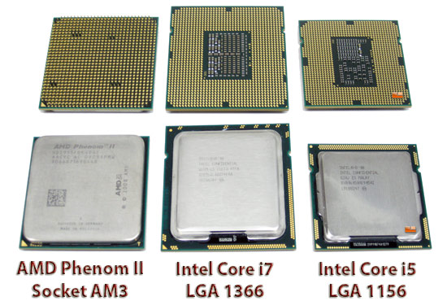
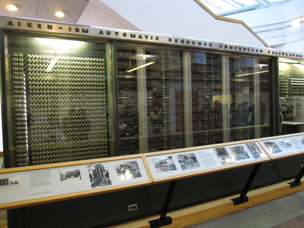
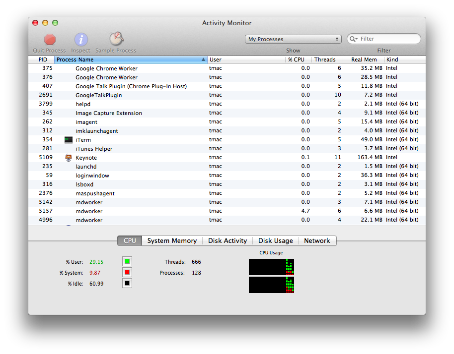

Chapter 3 C-3PU, Human-Processing Relations
Now that you know all about 01100010 01101001 01110100 01110011, let's take a look at how your computer... computes! At the heart of your computer is the central processing unit, or CPU. The CPU is responsible for executing the instructions that make your computer do things (like compute!). For example, if you click the Google Chrome icon on your Mac or PC, your CPU will be sent instructions that say something like "Please open up Google Chrome!" Then, as Chrome is starting up, it will probably send instructions to the CPU that say something like "Please go to www.google.com!" (Or if you're me, a page like this is more likely to open up). Though the CPU is what puts the "compute" in "computer," it's actually pretty small, measuring a few inches in size. Here are a few modern CPUs that could be found in the computer you're using right now.

A Quick History Lesson
Turns out that computing hardware wasn't always that small. One of the first computers capable of executing stored instructions was EDVAC (Electronic Discrete Variable Automatic Computer), developed in the mid-1940s for the United States Army by the University of Pennsylvania. Weighing almost 9 tons and covering about 500 square feet, EDVAC could add two numbers together in about 850 microseconds.

Another one of the first stored-instruction computers was developed a bit closer to home. The Harvard Mark I, which still lives partly in the Science Center down the road, was developed for the United States Navy also in the mid-1940s. The Mark I could execute instructions specified on paper punch cards, and mathematical operations like logarithms took over a minute.

Processes
The CPU's main job is to handle the execution of processes, which is a single instance of a program being executed. An operating system will typically allow you to view the current processes that are executing on your machine. For example, when I opened up Apple Keynote to make a presentation, a new process for the CPU to run was kicked off. So, processes have a set of instructions that tell your CPU how the program actually works. On Windows, you can press the infamous Ctrl-Alt-Delete to open up the task manager, while on Mac OS X, you can open a program called the Activity Manager, shown below. Each of these rows represents a different process, and we can also see how CPU-intensive each process is as well as how much memory it's consuming. If your computer starts to slow down, applications like the Task Manager on Windows and Activity Manager on Mac can be useful for identifying which currently-running process is the culprit (as a result of greedy memory or CPU usage). These applications also allow you to kill processes that are hanging or no longer responding, which should shut down a stalled program.

CPU Instructions
However, a CPU doesn't understand English sentences like "open Google Chrome" (yet, anyway). In reality, the instructions that can be understood by a CPU are much more primitive. What we would consider a simple task (like reading an email) actually requires a huge number of CPU instructions to complete because each individual instruction is so simple and low-level. So, the CPU will typically be given a sequence of these small instructions that when run in some predetermined order create some larger functionality like reading an email. For example, reading an email requires your computer to download the email, display its contents, remember that the message has been read, etc. Then, the task of displaying an email can be broken down even further, as it requires figuring out what font to use, what color the text should be drawn in, and actually displaying something on your screen. Even then, these instructions are still at a much, much higher level than the instructions understood by a CPU; in many cases, a CPU instruction is a task that can't be broken down much further.
Instead, more realistic CPU instructions could include "add two numbers together," "flip the fourth bit in this 4-byte number," or "determine if these two numbers are equal." Doesn't get much simpler than that! But, Angry Birds is in fact really just a very long sequence of instructions like these.
The list of all the different types of instructions that can be understood by a CPU is called its instruction set. Not all CPUs are alike, which means a CPU manufactured by AMD may understand a different set of instructions than a CPU made by Intel does. Similarly, an Intel CPU made today and an Intel CPU made a few years ago may also have different instruction sets. The instructions in a CPU's instruction set can be broken up into three main groups: data, arithmetic, and control flow.
Data handling instructions involve retrieving or storing data in the computer's memory. For example, saving a document in Microsoft Word requires a sequence of instructions that involves creating or updating a Word document that you can access later. Similarly, playing a song in iTunes requires a sequence of instructions that somehow opens up a music file. We'll take a much closer look at memory in the next section!
Arithmetic instructions are just what they sound like: it's very common for the CPU to perform mathematical operations. The CPU can add, subtract, multiply, and divide, as well as compare numbers and perform operations on the individual bits of a number. Arithmetic CPU instructions aren't particularly fancy; if your CPU were in elementary school, he or she would probably be performing at a fourth grade math level. Unlike that of fourth graders, though, your CPU's arithmetic is screaming fast and very accurate. Let's just say that if your class had multiplication competitions, your CPU wouldn't have any friends afterward.
Control flow instructions help the CPU decide what to do next. A sequence of instructions may contain a built-in fork in the road; based on your computer's current conditions, the CPU might decide to skip over a few instructions or repeat some instructions. Much more on this topic a bit later, but for now, just remember that some instructions can affect the order in which other instructions are executed!
Each of these instructions is represented with a unique number called an opcode, which is short for "operation code". Any additional data used by an opcode are called operands. For example, if an arithmetic instruction tells the CPU to add two numbers, the CPU is going to need to know what numbers to add. Since both opcodes and operands are represented with numbers, all of the instructions passed to a CPU can be expressed in binary. In that sense, then, everything your computer does really does boil down to the zeroes and ones we saw earlier.
The CPU Pipeline
Let's take a look at how the CPU actually goes about executing these instructions. One of the main goals of a CPU is to be as fast as possible, which allows smart people at NASA to land on Mars and people like us to watch as many cat videos as we can handle. To do so, the CPU runs each instruction through a pipeline, which is just like a factory assembly line. The task of building a car can be completed in a sequence of phases, where the assembly line will typically have a number of separate machines dedicated to performing a single task like securing a wheel or attaching a sweet hood ornament. Once a machine completes its job, the car is one step closer to reaching completion and the machine is ready to perform that same task on the next car to come through the assembly line.
In our CPU assembly pipeline, we'll be executing a single instruction rather than building a car. We'll have four different machines to do so (though your CPU probably has a few other, potentially more complicated ones):
Fetch. The first thing the CPU needs to do is... figure out what to do! Recall that our CPU will be executing some sequence of tasks. So, the fetch phase of the pipeline is responsible for determining the instruction that actually needs to be executed next.
Decode. Remember, our CPU's instructions are actually given as opcodes and operands that are represented using zeros and ones. The decode phase of the pipeline is responsible for figuring out what those zeroes and ones actually mean. After this phase is complete, the CPU knows exactly what it needs to do to execute the instruction.
Execute. This is the meat and potatoes. The execute phase does just that: runs the requested computation. Here's where your CPU will obediently perform an arithmetic operation, grab something from memory, etc.
Writeback. Our fourth and final stage is where we store the result of the computation. The execute phase just went through all that trouble to perform a computation, so we don't want to just throw that away. Instead, the writeback phase will write the result to memory somewhere, often in a special location on the CPU itself, so the result of the instruction can be used later. More on memory in the next section!
And that's it! Let's try running an instruction through this pipeline. First, the fetch phase will determine what instruction should be run by the CPU next. Since these instructions will be represented as binary in memory, this instruction could look something like 0000001001010011 (by the way, how many bytes is that?). This doesn't make too much sense yet, so next, the decode phase will be run in order to determine what this sequence of bits means. As an example, the CPU could determine that the first 8 bits of this instruction, 00000010, tell the CPU what it should be doing, and a decimal value of "2" corresponds to the operation "add." Then, the decode phase could determine that the remaining 8 bits describe two 4-bit numbers that can be added together, which in this case are 0101 and 0011, or 5 and 3. Now that the decode phase has uncovered the mystery behind that sequence of bits, the execute phase can begin, and the CPU will actually perform the addition and obtain an answer of 8. Finally, the writeback phase will remember that result, so perhaps another instruction can use it later.
Each instruction that we want the CPU to run will have to go through all four of these phases. Because the CPU is constantly running instructions, putting new things through the CPU pipeline is a cyclic process. Visually, running four instructions through our pipeline looks something like the below, where each block in the diagram represents a single CPU cycle.
| 1 | F | D | E | W | |||||||||||||
| Instruction | 2 | F | D | E | W | ||||||||||||
| Instruction | 3 | F | D | E | W | ||||||||||||
| 4 | F | D | E | W | |||||||||||||
| 1 | 2 | 3 | 4 | 5 | 6 | 7 | 8 | 9 | 10 | 11 | 12 | 13 | 14 | 15 | 16 | ||
| Clock Cycle | |||||||||||||||||
Parallelism
Here, each color represents a different part of the CPU pipeline. However, this doesn't look very efficient! Once the fetch "machine" in the CPU pipeline finishes its job, it sits dormant until the next instruction comes along. If this were a real assembly line, then only one car would ever be present on the assembly line at one time! (If you were in charge, you'd probably be fired by now.) Because different parts of the CPU handle different parts of the pipeline, we can be more efficient through multi-tasking, or parallelism. Rather than waiting for the rest of the pipeline to finish an instruction, the CPU can start fetching the next instruction before the current one completes! That way, the CPU is wasting a lot less time. Our new, more efficient pipeline now looks something lke this:
| 1 | F | D | E | W | ||||
| Instruction | 2 | F | D | E | W | |||
| Instruction | 3 | F | D | E | W | |||
| 4 | F | D | E | W | ||||
| 1 | 2 | 3 | 4 | 5 | 6 | 7 | ||
| Clock Cycle | ||||||||
Sweet deal, we're much more efficient now! What once took us 16 cycles to complete now takes only 7 cycles! Not bad at all, if you ask me. So, we were able to make our CPU significantly faster by taking advantage of the fact that we can execute different stages of the pipeline in parallel, or at the same time.
Multi-Core Architectures
Parallelizing at the instruction level isn't the only way to improve the performance of CPUs. While shopping for a new computer (as we'll do together shortly!), you may have seen advertisements for dual-core or quad-core CPUs on new machines. In general, multi-core processors combine multiple CPUs into one. So, at any given time, a multi-core will be executing multiple pipelines at once. When you're using your computer, there's a good chance you don't just have one program running at once. For example, right now, I'm listening to music on Spotify, checking email on Chrome, and typing this section. Each of these programs is probably issuing a sequence of instructions to my laptop's CPU. If I only had a single core, then each of these separate instruction sets would have to go through the same pipeline, with my CPU figuring out how to execute things in a fair order. However, with multiple cores, these different sequences of instructions can be sent to different cores, which effectively allows the CPU to do more than one thing at once! That means that your CPU can more effecively deal with your running more than one program at once, which creates a better experience for you as a computer user.
A dual-core CPU has two cores, which is just like having two CPUs on your machine. Similarly, a quad-core CPU has four cores. Higher performance machines may have hexa-core (6) or octa-core (8) CPUs. Believe it or not, CPUs with 16, 32, and even 64 cores exist as you're reading this right now! However, adding more cores to your CPU won't necessarily make all software perform better. In fact, many computer programs were written before multi-core processors were commonly found in consumer computers. If these programs were written with only a single core in mind, then the existence of other cores won't really help if they're just sitting there doing nothing (or much less than they could)!
A Parallel Problem
Let's look at a problem that we can solve more efficiently using parallelism, which allows us to do more than one thing at once. While cleaning my room for the first time in months, I stumbled upon a piggy bank that was full of change. Now, I'd like to know if I have enough money to finance a long-awaited cruise to the Bahamas. If it's just me and my lonesome, then I can plop down on the floor and individually count each individual coin. However, if it looks like there's a lot to count, the first thing I'll probably do is call in some friends to help me. Let's say I find seven friends (which is a lot for me) to help count. We'll try to divy up the coins as evenly as possible among the eight of us, and then we'll all start counting at the same time. Because each individual person has 1/8th of the total number of coins to count, it would take me 8 times longer to count all of the coins by myself. Once all the coins have been counted, we have a new problem: we have 8 different people with 8 different counts, but I'm looking for a single total count. So, we need to figure out a way to aggregate everyone's separate totals. The simplest way to do that would be for me to ask each of my friends individually what his or her total is, and add everything together as I go along. But, this sounds like it's going to take a while. While all of my friends were able to count their coins in parallel, I have to add everything up one-by-one in serial. This doesn't sound so bad, but let's think about how we can make this faster. One way I can speed up is to grab even more friends to start counting for me. Because everyone is counting at the same time, it makes sense that the more people I get to help me, the faster we can get all of the coins counted. Let's say that I'm so popular that I get as many people to help as I have coins. That means that each person has only one coin to count! Couldn't get much faster than that, right? Well, now it's time for me to add everything up again—how long will it take me to do that? If each of my friends has only one coin, then I need to count every single one of my friends to get a total, which is no better than simply counting the coins myself!
Hmmm, looks like we need to come up with a better way of counting everyone's totals. It seems like the main problem with our approach is that I'm counting everything individually, so let's make this a bit more parallel. Rather than having me ask all of my friends what their total is, let's instead have our friends tell each other what their total is. We'll have my 8 friends pair off and add their numbers together, which will give us 4 new totals. In this approach, we can calculate these 4 new totals all at the same time, since each friend is only talking to the other friend in the pair. Now, one friend from each pair can go home, while the other friend from the pair needs to remember the new total. We can repeat this process now, this time going from 4 separate totals to 2 separate totals and sending two friends home. If we do this one more time, then we've figured out the total we originally wanted to count! In our original approach, it would have taken me 8 steps to figure out the total, since I needed to talk to all 8 friends. Now, it only took us 3 steps! Remember, it took one step to go from 8 totals to 4 totals, another step to go from 4 to 2, and a final step to go from 2 to 1. So, it looks like our parallel way of counting everything allowed us to solve the problem in less than half as many steps! Not bad, eh?
CPU Performance
There isn't one silver bullet when it comes to comparing the performance of two CPUs. A CPU's clock speed, nowadays measured in gigahertz (GHz), describes the rate at which the CPU executes instructions. Specifically, the clock speed measures how many cycles the CPU can complete in one second. A higher clock speed means that the CPU can execute more instructions in a single second, so a CPU with a higher clock speed will perform faster than an identical CPU with a lower clock speed. The clock speed of CPUs has been rising over the past several decades largely due to a trend known as Moore's Law, which states that processing power will double every 18 months. Really, Moore's Law refers to the number of transistors (aka fundamental electronics components that operate on electrical signals) on integrated circuits (aka a CPU chip) doubling, but we won't worry too much about that.
However, other factors also influence the overall performance of a CPU, so simply comparing the clock speeds of two CPUs won't necessarily tell you which is faster. As we've seen, parallelism is an important contributor to the performance of modern processors. So, processors with two or four cores may have better performance than their single-core equivalents. The instruction set of a CPU can also affect its performance. For example, if one processor can complete a task using one instruction that takes another processor five instructions, then naturally, it may be able to complete certain tasks faster even if it has a slower clock speed. Finally, the size of a CPU's pipeline can affect its performance, as explained in the video below. In this 2001 MacWorld keynote, Apple coined the term "Megahertz Myth" to describe the issues surrounding the comparison of two CPUs using only clock speed. The pipeline animation is pretty fancy for the early 2000s.
Thanks, Steve! 2001 was definitely one of the most technical Apple Keynotes... ever. In honor of Apple's founder and CEO, here's one more thing: a detailed look into the process of fabricating a CPU, which might be a bit crazier than you expect!
And this concludes our discussion of processors. Next, we'll see how your computer stores the results of all those computations!
Practice Problems
What's the difference between an instruction set and a pipeline?
What effects can the size of the CPU pipeline have on performance? How about the CPU's instruction set?
Why are parallelized pipelines more efficient?
You know that neighbor who always one-ups you? Apparently he just bought a processor that has twice as many cores as yours. Does that make it twice as fast?
Unsatisfied, your neighbor turns in his processor for a new CPU whose clock speed doubles that of your CPU. Now is it twice as fast?
If Moore's Law says processing power will double every 18 months, but why can't our processors have phenomenal cosmic power? That is, why can't this trend continue forever?